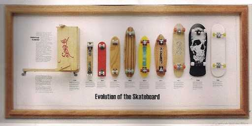
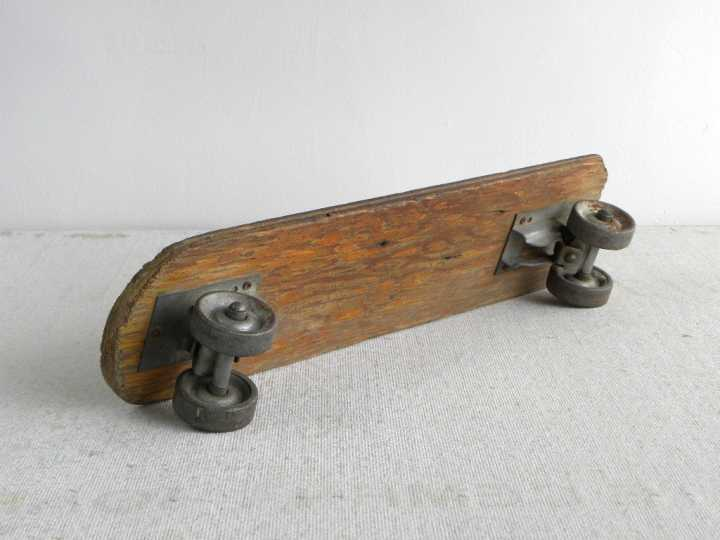
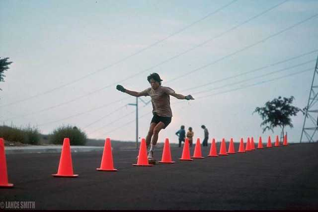
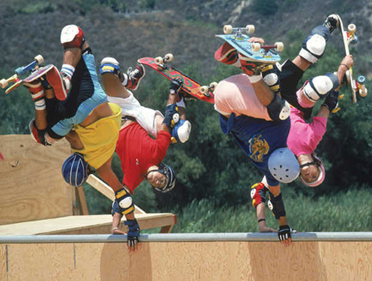
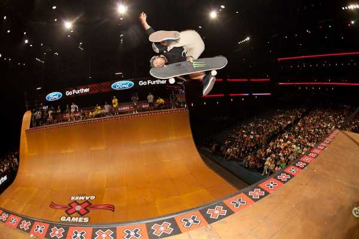

滑板的演变——从陆地冲浪到超级巨星的历史
滑板项目是极限运动历史的鼻祖，许多的极限运动项目均 由滑板项目延伸而来。50年代末60年代初由冲浪运动演变而成的滑板运动，在而今已成为流行运动。滑板的技巧主要包括：THE AERIAL（在滑杆上）、THE INVERT（在U台上）、THE OLLIE（带板起跳），这些技术可说是除了翻板之外最重要的滑板动作。世界上两个重要的滑板国际组织：国际滑板商协会（INTERNATIONAL ASSOCIATION OF SKATEBOARD COMPANIES，IASC）J及世界杯滑板赛（WORLD CUP SKATEBOARDING，WCS）。
滑板是冲浪运动在陆地上的延伸。前者受地理和气候的限制，而后者则有更大的自由度。
五十年代 中、后期，美国南加州海滩社区的居民们发明了世界上第一块滑板，一块50X10X50CM的木版固定在轮滑的铁轮子上。然而，这样一个简单的运动器械，却因为它能给人们带来和冲浪相同的感受，开始受人瞩目。

第二代滑板诞生于1962年，由橡木多层板压制而成的板面、轮滑转向桥和塑料轮子组成。与第一代滑板相比，这种滑板无疑是技术上的一个飞跃。但是，这种滑板的塑料轮的性能依然不理想。它的过小的附着摩擦力使滑板转弯时失控；而它的低弹性则使滑板遇到即使微小的障碍物也会嘎然而止，把滑手摔下来。同时，它的耐磨性也太差。尽管如此,这种滑板仍然受到滑手们的普遍欢迎。毕竟，和前一代滑板相比，它已经有了很大程度的进化，相对宽大的板面使滑手们更容易站立和操纵。

1973年，一个叫弗兰克的滑板爱好者首次将聚氨酯轮子安在他的滑板上并取得了意想不到的效果。这种柔韧的轮子不仅耐磨，而且可以使滑板安全稳当地急转弯，轻易而举地碾过地上的小障碍。这就是第三代滑板。七十年代中期，是滑板飞速发展的时期，聚氨酯的潜力被大大地发挥出来。各种材料的踏板、转向桥如雨后春笋般涌现。而全美各地星罗棋布的滑板公司也向人们揭示着一个新的运动的到来。
由于滑板是冲浪运动的衍生，七十年代的滑板文化带着冲浪的印记，滑板爱好者修建的滑板公园都是在模拟冲浪的地形。直到美国加州圣塔莫尼克的“西风”滑板队摒弃了冲浪道具，首次把钥匙孔游泳池作为练习垂直表面滑板的场地，并在全美掀起了“泳池滑板热”，至此，滑板运动开始从冲浪中，不仅是从器材、场地，也从人员上彻底分离出来，并形成了自己的语言、技巧、服饰风格和音乐爱好。

八十年代末，由于滑板运动本身的发展和滑手们对滑板技巧要求的提高，以及为了适应U型池（vert ramp）双向滑行的需要，一种与前三代滑板形状完全不同的两头翘起、形状对称的滑板出现了，这就是第四代滑板。制作这种滑板的材料叫硬岩枫，重量更轻，弹性更好。滑板轮硬度高,弹性好,更适合高速滑行。由于重量平衡,第四代滑板更适合各种翻转动作。

九十年代初，滑板从一头改为两头，因而出现了许多前一代滑板不可能完成的动作。这个时期是滑板运动的技巧性动作（technical tricks）时代。滑手们发明了很多新的动作。同时为了使滑板更容易翻转，滑板板面变得很窄，轮子变得很小。这个时期一块典型的滑板宽度只有7英寸，而轮子直径只有39mm左右。这样的滑板虽然更易于做出复杂的动作，但是较小的轮子却妨碍了它的滑行性能。 现在国际上极限运动比赛常用的滑板属于第四代滑板，板面普遍以五层、七层或九层枫木板微波冷压制成，也有用铝合金、碳纤维等材料所做成的。板面上粘上一层防滑层（俗称“砂”Griptape），轮子一般采用聚胺酯为主要材料，用合金制成的滑板支架（又称“转向桥”Truck）与板面相连。